Bayesian Calibration¶
We consider a computer model  (i.e. a deterministic function)
to calibrate:
(i.e. a deterministic function)
to calibrate:
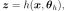
where
- is the input vector;
- is the output vector;
- are the unknown parameters of
to calibrate.
Our goal here is to estimate  , based on a certain
set of
, based on a certain
set of  inputs (an
experimental design) and some associated observations
inputs (an
experimental design) and some associated observations
 which are regarded as the
realizations of some random vectors
, such that, for all
which are regarded as the
realizations of some random vectors
, such that, for all  ,
the distribution of 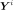 depends on
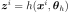. Typically,
where
,
the distribution of 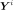 depends on
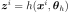. Typically,
where
 is a random measurement error.
is a random measurement error.
For the sake of clarity, lower case letters are used for both random variables and realizations in the following (the notation does not distinguish the two anymore), as usual in the bayesian literature.
In fact, the bayesian procedure which is implemented allows to infer
some unknown parameters from
some data as soon as
the conditional distribution of each 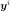 given
 is specified. Therefore can
be made up with some computer model parameters
together with some others
is specified. Therefore can
be made up with some computer model parameters
together with some others  :
:
 .
For example, may represent the unknown
standard deviation 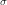 of an additive centered gaussian
measurement error affecting the data (see the example hereafter).
Besides the procedure can be used to estimate the parameters of a
distribution from direct observations (no computer model to calibrate:
.
For example, may represent the unknown
standard deviation 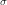 of an additive centered gaussian
measurement error affecting the data (see the example hereafter).
Besides the procedure can be used to estimate the parameters of a
distribution from direct observations (no computer model to calibrate:
 ).
).
More formally, the likelihood is
defined by, firstly, a family
of probability
distributions parametrized by  , which is specified in
practice by a conditional distribution 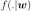 given
(
, which is specified in
practice by a conditional distribution 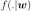 given
( is a PDF or a probability mass function),
and, secondly, a function
such that
which enables to express the parameter of the i-th
observation in function of
: thus
and
is a PDF or a probability mass function),
and, secondly, a function
such that
which enables to express the parameter of the i-th
observation in function of
: thus
and
Considering the issue of the calibration of some computer model
parameters , the full statistical model can be
seen as a two-level hierarchical model, with a single level of latent
variables  . A classical example is given by the
nonlinear Gaussian regression model:
. A classical example is given by the
nonlinear Gaussian regression model:
It can be implemented with the PDF of
the Gaussian distribution , with
,
and with  , respectively
, if
is considered known, respectively unknown.
, respectively
, if
is considered known, respectively unknown.
Given a distribution modelling the uncertainty on
prior to the data, Bayesian inference is used to perform the inference
of , hence the name Bayesian calibration.
Contrary to the maximum likelihood approach described in Maximum Likelihood Principle, which
provides a single ‘best estimate’ value  ,
together with confidence bounds accounting for the uncertainty remaining
on the true value , the Bayesian approach derives a
full distribution of possible values for given the
available data
,
together with confidence bounds accounting for the uncertainty remaining
on the true value , the Bayesian approach derives a
full distribution of possible values for given the
available data  . Known as the posterior distribution of
given the data , its density can be
expressed according to Bayes’ theorem:
. Known as the posterior distribution of
given the data , its density can be
expressed according to Bayes’ theorem:
(1)¶
where
is the (data) likelihood;
 is the so-called prior distribution of
(with support 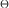), which encodes
all possible values weighted by their prior
probabilities, before consideration of any experimental data (this
allows for instance to incorporate expert information or known
physical constraints on the calibration parameter)
is the so-called prior distribution of
(with support 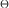), which encodes
all possible values weighted by their prior
probabilities, before consideration of any experimental data (this
allows for instance to incorporate expert information or known
physical constraints on the calibration parameter) is the marginal likelihood:
is the marginal likelihood:
which is the necessary normalizing constant ensuring that the
posterior density integrates to  .
.
Except in very simple cases, (1) has, in general,
no closed form. Thus, it must be approximated, either using numerical
integration when the parameter space dimension  is low,
or more generally through stochastic sampling techniques known as
Monte-Carlo Markov-Chain (MCMC) methods. See The Metropolis-Hastings Algorithm.
is low,
or more generally through stochastic sampling techniques known as
Monte-Carlo Markov-Chain (MCMC) methods. See The Metropolis-Hastings Algorithm.
API:
Examples:
References:
- Berger, J.O. (1985). Statistical Decision Theory and Bayesian Analysis, Springer.
- Marin J.M. & Robert C.P. (2007) Bayesian Core: A Practical Approach to Computational Bayesian Statistics, Springer.